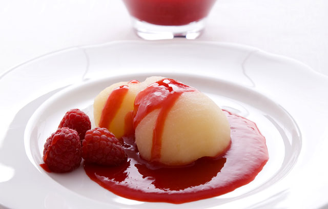

Wonton baskets filled with lemon Chantilly, raspberries and raspberry coulis
Ingredients
- 12 sheets ready-made wonton wrappers
- 4 tbsp icing sugar
- lemon, juice only
- 300ml/10fl oz double cream, whipped until soft peaks form when the whisk is removed
- 300g/10oz fresh raspberries, plus 350g/12oz fresh raspberries, to serve
- icing sugar, to taste
Preparation method
Preheat the oven to 200C/400F/Gas 6. For the wonton cases, place four chefs' rings onto a baking tray. Lay three of the wonton wrappers into each ring, one on top of each other, so that they cover the sides and base of the ring. Weigh the wrappers down with baking beans or rice, then transfer to the oven and bake for 7-10 minutes, or until crisp and pale golden-brown. Carefully remove the crisped wonton baskets from the chefs' rings. Set aside to cool on a wire rack. Meanwhile, for the lemon Chantilly, add the icing sugar and lemon juice to the whipped cream and whisk until the mixture is well combined and stiff peaks form when the whisk is removed. Transfer the Chantilly to a piping bag and set aside in a cool place. For the raspberry coulis, blend the raspberries and lemon juice until smooth. Add the icing sugar, a tablespoon at a time, blending and tasting after each addition, until the sweetness is to your taste. Strain the coulis mixture through a sieve, reserving the sieved liquid. Chill in the fridge until needed. To serve, pipe some of the cream into each wonton basket. Arrange the raspberries on top of the Chantilly. Drizzle over the raspberry coulis.